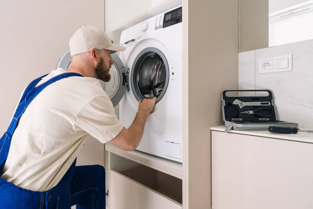
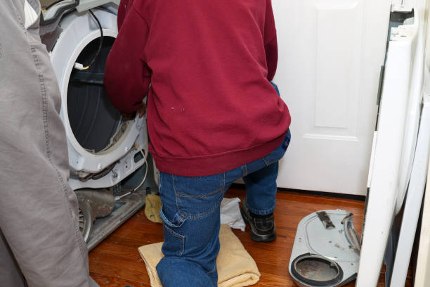

Noise
issues
Dryer making noise?We track the sound and fix it at the source.
If you hear squealing, grinding, thumping, or scraping, we test the rollers, belt, blower, and drum support system to find the real source fast.
Noise source checks
Rollers, idler, blower, and drum area testing.
Movement review
We check whether speed, load, or support wear is causing the sound.
Clean repair
Clear estimate and tidy in-home service.
What we check
The main reasons a dryer starts making noise
Noise problems can come from simple wear parts or deeper drum support issues. We trace the sound path and fix the actual source instead of guessing.

Drum rollers
Worn rollers can create rumbling, thumping, or rough movement.
Belt and idler pulley
A worn belt path can squeal, chirp, or scrape during the cycle.
Blower wheel and airflow path
We inspect the blower assembly for obstruction or damage.
Drum support and alignment
Support wear can create scraping, banging, or uneven movement.
Helpful note
Tell us what kind of sound you hear: squeal, grind, thump, or scrape, and whether it happens at the start, during the cycle, or near the end. That helps us narrow the likely source faster.
Our process
A clean workflow for noise repair
We trace the sound path, confirm the failed part, and verify that the dryer runs without the extra noise before we leave.
1. Inspect
We check rollers, belt path, blower housing, and drum support.
2. Confirm
We identify exactly where and when the sound starts.
3. Repair
We complete the repair with clean, careful workmanship.
4. Verify
We run the dryer and confirm the noise is gone.
What you get
Clear estimate, targeted repair, and a dryer that runs more quietly and smoothly again.
Common causes
What usually causes a dryer noise problem
Worn drum rollers
Roller wear can create a repeating thump or rumble as the drum turns.
Bad idler pulley
A weak pulley can squeal or chirp as the belt moves.
Blower wheel problem
A damaged blower wheel can create buzzing, rattling, or scraping sounds.
Worn drum supports
Support wear can cause rubbing or metal-on-metal contact.
Foreign object in drum path
Loose hardware or debris can click or scrape during rotation.
Motor or mount issue
A weak mount or stressed motor can add extra vibration and noise.
FAQ
Quick answers about noise repair
Yes. Worn rollers are one of the most common causes of thumping and rumbling sounds in a dryer.
Not always. A squeal can also come from the idler pulley, motor, or another moving support part in the dryer.
Usually yes. Continued use can wear the damaged part faster and sometimes turn a small noise into a larger repair.
Tell us what sound you hear, when it happens, and whether the dryer still heats and tumbles normally. That makes the diagnosis faster.